Construction 2.21.1. Suppose that \(F:M\times N \to P\) is a functor, and \(P\) has pushouts. Then the pushout-product denoted \(\hat{F}\) is a functor on the arrow categories defined on arrows \(i,j\) by the diagram below.

Simplicial things come up in mathematics a lot. There are at least three (related) places of origin. The first is homotopy theory. Simplicial sets give a way of modeling the homotopy theory of topological spaces, and are often a convenient model for higher categories. The second is in homological algebra. There is the Dold Kan correspondence which identifies homotopy theories of chain complexes and simplicial objects, which suggests that simplicial objects can be useful for applying homotopical methods in nonabelian settings. The third place it arises is when studying monoids. Namely, the simplex category classifies monoids in a tensor category, meaning that tensor functors from \(\Delta \) coincide with monoid objects. This can be used in the construction of canonical resolutions from (co)monads, and in the formalism of monoidal \(\infty \)-categories.
Lemma 2.1. \(\Delta ^{op}\) is sifted.
Proof. \(\Delta \) can be thought of as the full subcategory of categories generated by digraphs that are finite paths. Thus we need to show the category of objects over \(\Delta ^n\times \Delta ^m\) is connected. But given an object in this over category, we can adjoin a terminal object, which is sent to the terminal object of \(\Delta ^n\times \Delta ^m\), But then any two such maps over \(\Delta ^n\times \Delta ^m\) are connected via the inclusion of the terminal object. □
There is an involutions of \(\Delta \) given by reversing the arrows of the partial orders. The action of this on simplicial objects is called the opposite.
Let \(S,J\) be classes of arrows.
Definition 2.2. \(J\) satisfies the \(2\) out of \(3\) property with respect to \(S\) if in \(\Delta ^2\)-shaped diagram where the edges are in \(S\), if two of the arrows are in \(J\), the third is.
Definition 2.3. \(J\) satisfies the \(3\) out of \(4\) property with respect to \(S\) if in a \(\Delta ^1\times \Delta ^1\)-shaped diagram where the boundary edges are in \(S\), if three of the arrows on the boundary are in \(J\), the fourth is.
Definition 2.4. \(J\) satisfies the \(2\) out of \(6\) property with respect to \(S\) if in a \(\Delta ^3\)-shaped diagram where the boundary edges are in \(S\), if the arrows \(0 \to 2,1\to 3\) are in \(J\), the rest are.
If \(S\) is all the arrows, we supress it from the terminology. In this case, \(2\) out of \(6\) implies \(2\) out of \(3\) which implies \(3\) out of \(4\). \(2\) out of \(6\) is satisfied by isomorphisms.
Definition 2.5. A weakly saturated class of morphisms is one containing isomorphism that is closed under transfinite composition, coproducts retracts, and pushouts.
Definition 2.6. The class of (left, right, inner) anodyne extensions is the weakly saturated class of morphisms generated from the inclusions of (left, right, inner) horns \(\Lambda ^n_i \to \Delta ^n\).
The adjective \(n\)-trivial will mean that we add \(\partial \Delta ^m\to \Delta ^m, m<n\) to the generators of the saturated set. When \(n=\infty \), we can just say trivial, and when \(n=-2\), this doesn’t mean anything.
Definition 2.7. A map \(f\) has the right lifing property with respect to a morphism \(g\) denoted \(f\oslash g\), if we can always find lifts in the diagrams
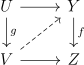
If \(L\) is a class of morphisms in \(C\), define \(L^{\oslash }\) to be the class of morphisms \(\{ f| L\oslash f \}\). Dually define \(\phantom{}^{\oslash }J\). \(\phantom{}^{\oslash }J\) is always weakly saturated.
Lemma 2.8. \(\phantom{}^{\oslash }(J^{\oslash })^{\oslash } = J^{\oslash }\)
Proof. By definition \(\phantom{}^{\oslash }(J^{\oslash })\oslash J^{\oslash }\), showing \(J^{\oslash } \subset \phantom{}^{\oslash }(J^{\oslash })^{\oslash }\). But \(J \oslash \phantom{}^{\oslash }(J^{\oslash })^{\oslash }\) since \(J \subset \phantom{}^{\oslash }(J^{\oslash })\) giving the other inclusion (this works for any binary relation). □
\(\phantom{}^{\oslash }(J^{\oslash })\) is like a saturation of \(J\), and often agrees with the weak saturation of \(J\).
Lemma 2.9. \(f\oslash f\) iff \(f\) is an isomorphism.
Proof. Find a lift for the square \(1\times f\) to get an inverse. □
Lemma 2.10. Let \(F\dashv G\) be an adjunction. Then \(FX \oslash Y\) iff \(X \oslash GY\).
Proof. This is immediate from the definition. □
Definition 2.11. A map is a (left, right, inner) \(n\)-connected fibration if it satisfies the right lifting property with respect to \(n\)-trivial (left, right, inner) fibrations.
A fibrant simplicial set is sometimes called a Kan complex, and an inner fibrant simplicial set is sometimes called an \(\infty \)-category or \((\infty ,1)\)-category or quasicategory.
As \(\SSet \) is a presheaf category, we can get natural adjunctions by left Kan extension whenever we have a cosimplicial object in some cocomplete category \(C\). For example, the cosimiplicial category where \(\Delta ^n\) gets sent to the category generated by \(n\) morphisms in a row (also denoted \(\Delta ^n\)) gives the nerve functor with adjoint the homotopy category. The standard simplices in \(\Top \) or \(\CGHaus \) give geometric realization \(|\cdot |\) and the singular set \(S\). Another example is a cosimplicial object in \(\SSet \) given by taking an ordered set to the nerve its poset of subset. This extends to a functor \(\sd :\SSet \to \SSet \), which is essentially barycentric subdivision, and its right adjoint is denoted \(\Ex \). The study of this functor is due to Kan I believe. There is a natural map \(h: \sd X \to X\) called the last vertex map that sends a vertex in \(\sd \Delta ^n\) to the last vertex of the subset it corresponds to. The adjoint of this is a map \(X \to \Ex X\).
Proposition 2.12. Geometric realization of simplicial sets preserves finite limits in \(\CGHaus \), the category of compactly generated spaces.
Proof. First let’s think about products. We can reduce to the case of simplices as follows. Let \(K,L\) be simplicial sets. Since products distribute over colimits, we have \[|K \times L| =|\int ^mK_m\cdot \Delta ^m \times \int ^nL_n\cdot \Delta ^n| = |\int ^{m,n}K_m\cdot L_n\cdot \Delta ^m\times \Delta ^n| \]\[= \int ^{m,n}K_m\cdot L_n \cdot |\Delta ^m\times \Delta ^n| = \int ^{m,n}K_m\cdot L_n \cdot |\Delta ^m|\times |\Delta ^n| = \int ^mK_m \cdot |\Delta ^m| \int ^n L_n \cdot |\Delta ^n|\]\[ = |K|\times |L|\]
Now the natural map \(|\Delta ^n \times \Delta ^m|\to |\Delta ^n|\times |\Delta ^m|\) is a continuous map of compact Hausdorff spaces, so it a homeomorphism iff it is a bijection. Suppose we have an element of \(|\Delta ^n|\times |\Delta ^m|\), given by a sequence of numbers \(c_i,d_j\), which are the components for the standard embedding of a simplex. Define \(c_i' = \sum _{k\leq i} c_i\) and similarly for \(d'_j\), and order the set consisting of \(c_i',d_j'\). Now define a simplex on vertices by going through the ordering and everytime you run into a number that is one of the \(c'_i\), increment the index of the \(\Delta ^n\) vertex, and similarly for the \(d'_i\) and the \(\Delta ^m\) vertex. It is easy to see that this is the unique nondegenerate simplex hitting \(c_i,d_j\), and it hits it in a unique point by taking the linear combination that is the incremental differences of the ordered set of numbers.
Equalizers are easier. First observe that an inclusion of simplicial sets induces an inclusion of a closed set upon realizing. This implies that the comparison map is an inclusion. For surjectivity one has to observe that for any point equalized in the realization, the nondegenerate simplex whose interior it is in is equalized, so it is in the image. □
Lemma 2.13. There is a homeomorphism \(|\sd \Delta ^n| \to |\Delta ^n|\), which realizes \(|\sd \Delta ^n|\) as the barycentric subdivision of \(|\Delta ^n|\). Moreover, this is naturally homotopic to \(|h|\) where \(h\) is the last vertex map.
Proof. A zero simplex of \(\sd \Delta ^n\) is given by a subset of the vertices \(v_i\) of \(\Delta ^n\), which we can send to the barycenter of that set in \(|\Delta ^n|\). We can then extend to \(\sd \Delta ^n\) by linear interpolation. Rewrite \(\sum _i \alpha _i v_i = \sum _j t_j X_j\), where the \(t_j\) are in increasing order and \(X_j\) is a sum of \(v_i\)s, so we have just regrouped the \(v_i\)s with the same coefficient into one \(X_j\). Define \(N_j = \sum _{k\geq j} (n_j+1)\) where \(n_j\) is the number of \(v_i\) in \(X_j\).
Then \(\sum _j t_jX_j = \sum _j (t_j-t_{j-1})N_j(\frac{1}{N_j}\sum _{k\geq j} X_k)\). \((\frac{1}{N_j}\sum _{k\geq j} X_k)\) is a barycenter, and \(\sum _j (t_j-t_{j-1})N_j = 1\) so we have written (uniquely) any element of \(\Delta ^n\) as an element of \(|\sd X|\). □
Lemma 2.14 (Generators of \(n\)-trivial inclusions). The \(n\)-trivial maps are those inclusions \(X\to Y\), where \(Y/X\) has nondegenerate cells in dimensions \(\leq n\). .In particular the saturation of the inclusions \(\partial \Delta ^n \subset \Delta ^n\) is all inclusions of simplicial sets.
Proof. It is easy to see the sets described are saturated. Given any inclusion \(X \subset Y\), let \(Y_n(X)\) denote the preimage of the n-skelaton of \(Y/X\) as a pointed simplicial set. Then since \(Y_{-1}(X) = X, Y_n(X) \subset Y_{n+1}(X), \cup _i Y_{i}(X)=Y\), it suffices to show that the inclusion \(Y_{n-1}(X) \to Y_{n}(X)\) is generated by \(\partial \Delta ^n \subset \Delta ^n\). But there is a pushout diagram
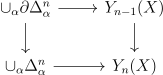
where alpha runs over all nondegenerate \(n\)-cells in \(Y/X\). □
Note: the inclusions \(\partial \Delta ^n\times \Delta ^m \cup \Delta ^n \times \partial \Delta ^m \subset \Delta ^n\times \Delta ^m\) should also generate inclusions.
Proposition 2.15 (Generators of left anodyne extensions). The three classes of maps below generate the left anodyne extensions:
Proof. \((2) \iff (3)\): This follows from Lemma 2.14 after observing that the class of inclusions \(X \to Y\) for which \((3)\) is true is saturated.
\((2) \implies (1)\): Let \(X_n\) be \(\Delta ^1\times \partial \Delta ^n \cup \Lambda _1^1 \times \Delta ^n\), and consider the map \(X_n \to \Lambda _i^{n+1}\) induced by the endomorphism of \(X_n\) determined on vertices by sending \((1,j)\) to \((0,j)\) for \(j \neq i\). The pushout along this map of the inclusion \(X \to \Delta ^1\times \Delta ^n\) contains \(\Delta ^{n+1}\) as a retract relative to \(\Lambda _i^{n+1}\).
\((1)\implies (2)\): First notice that the \(n-1\) skeleta agree, so there is only need to add \(n+1\)-simplices. Let \(\sigma _i\) denote the \(n+1\) simplex of \(\Delta ^1\otimes \Delta ^n\) where the \(\Delta ^1\) component starts being \(1\) on the \(i^{th}\) vertex. Then in decreasing order of \(i\), extend along \(\Lambda _i^n\) to \(\sigma _i\) to build up \( \Delta ^1\times \Delta ^n\) out of \(\Delta ^1\times \partial \Delta ^n \cup \Lambda _1^1 \times \Delta ^n\) □
Corollary 2.16 (Generators of anodyne extensions). The three classes of maps below generate the anodyne extensions:
Proposition 2.17 (Generators of inner anodyne extensions). The classes of maps below generate the inner anodyne extensions:
Proof. \((1) \implies (2)\): First observe that the \(n-1\)-skeleton agrees with that of \(\Delta ^2\times \Delta ^n\). Let \(\sigma '_i,i>0\) be the nondegenerate \(n+1\)-simplices projecting onto \(s_i\Delta ^n\), that switches from \(0\) to \(2\) in \(\Delta ^2\) at the \(i^{th}\) vertex. Let \(\sigma _{i,0}\) be the nondegenerate \(n+2\)-simplex projecting to \(s_is_i\Delta ^n\), and let \(\sigma _{i,1},i>0\) be the nondegenerate \(n+2\)-simplex projecting to \(s_{i}s_{i-1}\Delta ^n\). Then in descending order of \(i\), we can attach \(\sigma '_i\), then \(\sigma _{i,0}\), then \(\sigma _{i,1}\) until we have build up \(\Delta ^2\times \Delta ^n\).
\((2) \iff (3)\): This follows from Lemma 2.14 after observing that the class of inclusions \(X \to Y\) for which \((3)\) is true is saturated.
\((2) \implies (1)\): Fix \(0<i<n\), and consider the endomorphism of \(\Delta ^2\times \partial \Delta ^n \cup \Lambda _1^2 \times \Delta ^n \subset \Delta ^2\times \Delta ^n\), with image consisting of the vertices \((0,j), j<i\), \((1,i-1)\), and \((2,j)\), for \(j\geq i\), where all the other vertices are sent to \((1,i-1)\). The image is \(\Lambda _i^n\), and the pushout of the inclusion into \(\Delta ^2\times \Delta ^n\) along this endomorphism retracts onto the inclusion \(\Lambda _i^n \to \Delta ^n\). □
Corollary 2.18. If \(K\subset L\) is (left, right, inner) anodyne and \(Y \subset X\), then \(K\times X \cup L\times Y \to L\times X\) is (left, right, inner) anodyne.
Proof. Let us do the proof for left anodyne extensions, the proofs in other cases are similar. Since the inclusions \(K\subset L\) for which the lemma is true are saturated, we reduce to the case when it is \(\Delta ^1\times \partial \Delta ^n \cup \Lambda _1^1 \times \Delta ^n \subset \Delta ^1\times \Delta ^n\). But now there is a commutative square:
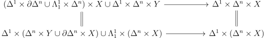
The lower map by \((3)\) of Corollary 2.16 is anodyne. □
A closed monoidal category is one where there are internal homs that are right adjoint to tensoring. This makes the category self-enriched. A \(V\)-enriched category with a lax monoidal functor to \(C\) has an underlying \(C\)-enriched category, and in this case of self enrichment, the underlying category is the original, and one can use an enriched Yoneda lemma to upgrade the internal hom adjunction to an enriched adjunction. In a \(V\) enriched category \(C\) we can use an underline such as \(\ul{\Hom }(a,b)\) or \(\ul{C}(a,b)\) to denote \(V\)-homs. We say cartesian closed if the monoidal structure comes from products. The presheaf category of a category \(C\) is always a cartesian closed symmetric monoidal category by the formula \(\Maps (X,Y)_Z = \Hom (X\times Z,Y)\), where \(Z \in C\). In particular this works in \(\SSet \). Moreover, there is a natural \(2\)-equivalence between \(\Set ^{C^{op}}\)-enriched categories and functors \(C^{op} \to \Cat \). The internal hom is also denoted \(Y^X\).
Given a complete and cocomplete cartesial closed symmetric monoidal category \(C\) we can form a symmetric monoidal category \(C_+\) of based objects with a map from the terminal object. The monoidal structure is the smash product, and the functor of adding a disjoint basepoint is strongly symmetric monoidal.
Now suppose \(C,D\) are \(V\)-enriched, where \(V\) is concrete, and suppose that we have an adjunction \(\adjunction{F}{C}{D}{G}\) on the underlying categories. We would like a situation where this can be upgraded to an enriched adjunction.
Definition 2.19. Let \(\ul{C}\) be \(V\)-enriched. \(\ul{C}\) is tensored if there is an isomorphism natural in all \(3\) variables: \(\ul{C}(a\otimes b,c) \cong \ul{V}(a,\ul{C}(b,c))\).
In other words, there is an enriched left adjoint of \(\ul{C}(b,-)\) for every \(b\).
Definition 2.20. Let \(\ul{C}\) be \(V\)-enriched. \(\ul{C}\) is cotensored if there is an isomorphism natural in all \(3\) variables: \(\ul{C}(b,\hom (a,c)) \cong \ul{V} (a,\ul{C}(b,c))\).
In other words, there is an enriched right adjoint of \(\ul{C}(-,c)\) for every \(b\).
Sometimes people also say copower and power instead of tensor and cotensor.
Definition 2.21. A two-variable adjunction is a triple of functors \(F: M\times N \to P\), \(G:M^{op}\times P \to N\), \(H: N^{op}\times P \to M\) so that there are natural isomorphisms \(\Hom (F(a,b),c) = \Hom (b,G(a,c)) = \Hom (a,H(b,c))\).
We can think of this as a family of adjunctions parameterized by \(a\) (or symmetrically in \(b,c\)). If \(\ul{C}\) is tensored and cotensored, there is a two-variable enriched adjunction \(\ul{C}(b,\hom (a,c)) \cong \ul{C}(a\otimes b,c) \). Moreover \(\otimes \) is unital and associative, essentially giving an action of \(\ul{V}\) on \(\ul{C}\).
Construction 2.21.1. Suppose that \(F:M\times N \to P\) is a functor, and \(P\) has pushouts. Then the pushout-product denoted \(\hat{F}\) is a functor on the arrow categories defined on arrows \(i,j\) by the diagram below.
The pushout-product of the initial map to \(a\) with a map \(b \to c\) is just the map \(F(a,b) \to F(a,c)\). Suppose that there is a two-variable adjunction \(F,G,H\) between \(M,N,P\), and suppose that \(M\) has pushouts and \(N,P\) have pullbacks. Then Construction 2.21.1 applied to \(F,G^{op},H^{op}\) give an induced \(2\)-variable adjunction \(\hat{F},\hat{G},\hat{H}\).
Lemma 2.22. If \(F,G,H\) are a two-variable adjunction, then \(\hat{F}(f,g)\oslash h\) iff \(g \oslash \hat G(f,h)\) iff \(f \oslash H(g,h)\).
Proof. This follows from construction and Lemma 2.10. □
Lemma 2.23. Suppose that \(C,D\) are tensored and cotensored over \(V\), and there is an adjunction \(\adjunction{F}{C}{D}{G}\) of functors on the underlying categories. Then the following data determine each other:
Moreover, in this case, \(G\) preserves the cotensoring and \(F\) preserves the tensoring.
Proof. It suffices to show \((1) \iff (2)\) as \((3)\) is dual to \((2)\). The point is to use the Yoneda lemma. For clarity, \(\ul{F}\) will denote enriched functors. If the adjunction is enriched, then \(\ul{D}(v\otimes \ul{F}m,n) = \ul{V}(v,\ul{D}(Fm,n)) = \ul{V}(v,\ul{C}(m,\ul (G)n)) = \ul{C}(v\otimes m,\ul (G)n) = \ul{D}(\ul (F)(v\otimes m),n)\). Conversely, if \((2)\) is satisfied, and \(U\) denoted the forgetful functor on \(\ul V\), then we can produce the counit via \(V(c,\ul C(Ga,Ga)) = C(c\otimes Ga,Ga) = D(F(c\otimes Ga),a) = D(c\otimes FGa,a) = V(c,\ul D(FGa,a))\) and the unit via \(V(a,\ul D(Fb,Fb)) = D(a\otimes Fb,Fb) = D(F(a\otimes b),Fb) = D(a\otimes b, GFb) = V(a,\ul D(b,GFb))\). □
We can transport enrichments and the property of being cotensored or tensored over \(V\) to \(V'\) provided we have an adjunction \(\adjunction{F}{V}{V'}{G}\) where the left adjoint is strongly monoidal. Moreover the \(V'\) enrichments on \(V,V'\) are compatible with the adjunction in this case.
Lemma 2.24. \(C^{D^{op]}}\) is enriched over \(\Set ^{D^{op}}\) and is tensored if \(C\) is cocomplete and cotensored if \(C\) is additionally complete.
Proof. If \(A \in \Set ^{D^{op}}, B \in C^{D^{op}}, d \in D\), define \((A\otimes B)_d = A_d\cdot B_d\), where \(\cdot \) is the copower, and observe that it is the tensoring, if the enrichment is given by \(\ul{\Hom }(B,C)_d = \Hom (d\otimes B,C)\). If \(C\) is complete and \(A=\colim _J d_j\), then define \(B^A\) by \(\lim _J B^{d_j}\), where \(B^{d_j}\) is given by the power \(B^{d_j}_{d} = \prod _{\Hom (d,d_j)}B\). This is a right adjoint of \(A\otimes (-)\). □
Corollary 2.25. Let \(K \subset L\) be an inclusion, and \(X \to Y\) a (left, right, inner) fibration. Then the natural map \(\Maps (L,X) \to \Maps (K,X)\times _{\Maps (K,Y)}\Maps (L,Y)\) is a (left, right, inner) fibration.
Proof. By definition \(A \to B\) has the left lifting property with respect to the map above iff \(A\times L \cup B \times K \subset B\times L\) has the left lifting property with respect to \(X \to Y\). Thus this follows from Corollary 2.18. □
Corollary 2.26. Let \(K \subset L\) be a (left, right, inner) anodyne extension, and \(X \to Y\) a (left, right, inner) fibration. Then the natural map \(\Maps (L,X) \to \Maps (K,X)\times _{\Maps (K,Y)}\Maps (L,Y)\) is a trivial fibration.
Proof. This has the same proof as Corollary 2.25. □
Lemma 2.27. For a (left, right) fibrant simplicial set, simplicial homotopy of verticies is an equivalence relations.
Proof. If \(g\) is a homotopy \(x\to y\), then \((g,1_y,\cdot ) = \Lambda _0^2\) can be filled into \(\Delta ^2\), giving a homotopy \(y \to x\). \(s_0x\) gives reflexivity, and if \(f:x \to y\) and \(g:y \to z\) are homotopies, then by extending \((g,\cdot ,f)\) to \(\Delta ^2\), we get a homotopy \(x \to z\). □
Corollary 2.28. Let \(X\to Y\) be a (left, right) fibration, and let \(K \to L\) be a cofibration. Then homotopies of maps from \(L\) to \(X\) covering \(Y\) relative to \(K\) is an equivalence relation.
Define \(\pi _0(X)\) to be the connected components of \(X\).
Simplicial sets generalize categories.
Lemma 2.29. The nerve is fully faithful on \(1\)-categories. It’s essential image is
Proof. First we will show that the first two descriptions of the essential image are the same. Suppowe we have a \(2\)-coskeletal \(\infty \)-category. Then we immediately get that there is a unique lift for inner horns when \(n>3\), since the inclusions of those horns are identities on the \(2\)-skelaton. If we have two composites of \(g\circ f\), \(\sigma ,\sigma '\) lifting both \(\Lambda _1^3 = (s_0 g,\cdot ,\sigma ,s_1f)\) and \(\partial \Delta ^3 = (s_0g, \sigma ,\sigma ', s_1f)\) to \(\Delta ^3\), we see by uniqueness of the lift on \(\Lambda _1^3\) that \(\sigma = \sigma '\).
Conversely given a simplicial set with unique lifts on inner horns, it is certainly an \(\infty \)-category, so it suffices to show it is \(2\)-coskelatal. To do this, it suffices to show that for \(n>2\), we can always extend maps along \(\partial \Delta ^n \subset \Delta ^n\). Uniqueness will follow from the fact that it extends an inner horn. This can be done inductivly on \(n\). Since \(n>2\), we can restrict to two different inner horns and extend to \(\Delta ^n\). Then the uniqueness of lifts for smaller \(n\) will show that the two extensions agree on the boundary, and are in particular extensions on \(\partial \Delta ^n\).
Now given such a simplicial set, rebuild the category in the obvious way. Namely, the verticies are objects, the \(1\)-simplices arrows (with the identity as the degenerate ones). The unique lifting on inner \(2\) horns gives a unique composition, the \(3\)-skelaton gives associativity, and the \(2\)-coskelativity says that maps between such simplicial sets are determined by preserving \(1\)-categorical structure.
Being a category implies the Segal condition, which in turn implies unique lifting of inner horns. □
Lemma 2.30. A category is a Kan complex iff it is a groupoid.
Proof. \(n\)-horns for \(n>2\) can always be extended for a category, and \(1\)-horns can be extended for any simplicial set. Moreover, we see easily see that extending \(\Lambda _2^2\) and \(\Lambda _0^2\) is equivalent to every map having (left and right) inverses. Of course, if every map has a left inverse, it is already a groupoid by associativity. □
There is an explicit description of the homotopy \(1\)-category of an \(\infty \)-category. Namely, we call the \(0\)-simplices objects, \(1\)-simplices arrows. Given simplicial sets \(X,Y\), \(X\star Y\) is the simplicial set where its \(n\)-simplices start in \(X\) and end in \(Y\).
Let \(x,y\) be objects in an \(\infty \)-category. Then the left mapping space from \(\LMaps (x,y)\) is the simplicial set whose \(n\)-simplices are the maps \(\Delta ^n\star \Delta ^0\) sending \(\Delta ^n\) to \(x\) and \(\Delta ^0\) to \(y\).
Lemma 2.31. \(\LMaps (x,y)\) is right fibrant.
Proof. Extending \(\Lambda _i^n \to \LMaps (x,y)\) to \(\Delta ^n\) is the same as extending \(\Lambda _i^{n+1} = \Lambda _i^n \star \Delta ^0 \to X\) to \(\Delta ^{n+1}=\Delta ^n\star \Delta ^0\), which is possible when \(0 < i \leq n\). □
Being left fibrant will be later shown to be equivalent to being a Kan complex. Two maps are left homotopic if they are the same in \(\pi _0(\LMaps (x,y))\). This is an equivalence relation. They are homotopic if there is a map \(\Delta ^1\times \Delta ^1\) restricting to identities on \(\partial \Delta ^1\times \Delta ^1\) and \(f,g\) on \(\Delta ^1\times \partial \Delta ^1\).
Lemma 2.32. Two maps in an \(\infty \)-category are left homotopic iff they are right homotopic iff they are homotopic.
Proof. Let \(\sigma \) be a left homotopy from \(f \to g\), meaning \(\partial \sigma = (g,f,1)\). Then extend the horn \((\sigma ,s_0g,\cdot ,s_0s_0d_1f)\) to \(\Delta ^3\), \(d_2\) of which is a right homotopy. Left homotopy clearly implies homotopy by having one of the \(2\)-cells be degenerate. Conversely, if \(g,f\) are homotopic, they are both either left or right homotopic to the third map in the homotopy, and so by transitivity an the fact that left and right homotopies agree, \(g,f\) are left homotopic. □
Lemma 2.33 (Homotopy \(1\)-category of an \(\infty \)-category). For an \(\infty \)-category \(C\), the homotopy \(1\)-category is given by the same objects, where \(\pi _0(\LMaps (x,y))\)
Proof. A map to a \(1\)-category certainly factors through \(\pi _0\LMaps (x,y)\). We will show we can build a \(1\)-category out of \(\pi _0(\LMaps (x,y))\) as the Hom sets. By Lemma 2.32 we can use any notion of homotopy. Since \(\Maps (\Delta ^2,X) \to \Maps (\Lambda _2^1)\) is a trivial Kan fibration by Corollary 2.26, any two composites are homotopic, so there is a well-defined composite up to homotopy. For associativity, if \(f\) realizes a composite \(a \circ b\), \(g\) realizes \(a\circ (b\circ c)\), \(f'\) realizes \(b\circ c\), then consider the map from \(\Lambda _{2}^{3}\) given by \((f,g,\cdot ,f')\). Extending to \(\Delta ^{n+1}\) and taking \(d_{n+1}\), we see that \(a\circ (b\circ c)\) is a realized as a composite of \((a\circ b)\circ c\). Any map to a \(1\)-category then factors uniquely through this category, so it is \(h(C)\). □
We define the homotopy \(1\)-category of spaces, denoted \(h(\Space )\) to be the category of Kan complexes and homotopy classes of maps between them. This will later be shown to be the homotopy \(1\)-category of a suitable \(\infty \)-category of spaces, \(\Space \). Similarly we can define \(h(\Space _*)\) using pointed Kan complexes.
There is a homotopy category of an \(\infty \)-category that is enriched over \(h(\Space )\), which is a better one.
Apparently the following proposition, due to Moore, convinced Milnor that simplicial sets are the right thing.
Proposition 3.1. A surjective homomorphism \(G \to H\) of simplicial groups is a Kan fibration.
Proof. Suppose we have a diagram
Since \(G \to H\) is surjective, we can lift \(\Delta ^n\) (without making the diagram commute), and divide by the lift, reducing to the case where \(\Delta ^n \to H\) is the identity. Thus we can assume \(H\) is trivial, so that it amounts to showing that a simplicial group \(G\) is fibrant.
Let \(f_j, j \neq i\) denote the boundary components making up \(\Lambda _i^n\). We will show by induction on \(j\neq i\) that there is a simplex agreeing with \(\Lambda _i^n\) on the first \(j\) boundary components. For the induction step, we can divide by the simplex in the induction hypothesis to reduce to the case that \(f_k\) is the identity for \(k<j\).
Consider \(s_jf_j\). \(d_js_jf_j=f_j\), and \(i \neq k < j\) we have \(d_ks_jf_j= s_jd_kf_j = s_j 1 = 1\). □
Definition 3.2. Let \(X\) be a Kan complex. Then \(\pi _n(X,x), n\geq 1\) is the set of homotopy classes of maps from \(\Delta ^n\) relative to \(\partial \Delta ^n\) being sent to \(x\).
Given two elements \([a],[b]\) of \(\pi _n(X,Y,x)\) we can multiply them to get \([a]\star [b]\) as follows: consider \(\lambda ^{n+1}_n\) given by \((x,x\dots ,x,a,\cdot ,b)\). By filling in the horn, \(d_n\) of the resulting simplex is the composite. By the homotopy extension property the homotopy class of the composite is only dependent on the homotopy class of \(a,b\). Moreover, one can easily see that there are inverses and identities, and that \(\pi _n(X,Y)\) with the operation \(\star \) is functorial.
Lemma 3.3. \(\star \) makes \(\pi _n\) into a group for \(n\geq 1\).
Proof. It remains to check associativity. If \(f = \Delta ^{n+1}\) realizes a composite \(a \star b\), \(g\) realizes \(a\star (b\star c)\), \(f'\) realizes \(b\star c\), then consider the map from \(\Lambda _{n+1}^{n+2}\) given by \((x,x,\dots ,f,g,\cdot ,f')\). Extending to \(\Delta ^{n+1}\) and taking \(d_{n+1}\), we see that \(a\star (b\star c)\) is a realized as a composite of \((a\star b)\star c\). □
Note that with another definition of \(\pi _n\) one could also use the homotopy category to prove associativity.
Proposition 3.4. Given a Kan fibration \(X \to Y\) where \(Y\) is fibrant, and \(F\) is the fibre, there is a natural long exact sequence \[\pi _n(F) \to \pi _n(X) \to \pi _n(Y) \to \pi _{n-1}(F) \to \pi _{n-1}(X)\] at any basepoint.
Proof. The maps \(\pi _n(F) \to \pi _n(X) \to \pi _n(Y)\) are the obvious ones. The composite is obviously zero, and if something is in the kernel, then by the homotopy lifting property, the class is equivalent to something from \(F\).
The boundary map \(\partial :\pi _n(Y) \to \pi _{n-1}(F)\) is defined by taking a class \(\alpha : \Delta ^n \to Y\), and extending the diagram
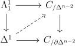
This is well-defined up to homotopy by Corollary 2.26. Something is in its kernel iff there is a lift of \(\alpha \) gives a class in \(\pi _n(X)\), showing that \(\pi _n(X) \to \pi _n(Y) \to \pi _{n-1}(F)\) is exact.
Clearly the composite \(\pi _{n+1}(Y) \to \pi _n(F) \to \pi _{n}(X)\) is trivial. If a class \(\alpha \) is in the kernel \(\pi _n(F) \to \pi _n(X)\), then there is a homotopy in \(X\) relative to the boundary from the trivial map. This homotopy factors through \(\Delta ^{n+1}\) giving a map whose boundary is \((x,x,\dots , \alpha )\). But this projects to a class in \(Y\) such that \(\partial \) of it is \(\alpha \). □
The free path space of \(X\) is \(\Maps (\Delta ^1,X)\). The path space of \(X,x\), denoted \(P(X)\) or \(P_x(X)\) is the pullback (or fibre) of the fibration \(\Maps (\Delta ^1,X) \to \Maps (\Delta ^0,X)\) given by \(d_0\) along the inclusion of \(x= \Maps (\Delta ^0,\Delta ^0)\). \(P(X)\) is trivial fibrant since it is the fibre of a trivial fibration.
By identifying \(P(X)\) with the pullback of the fibration \(\Maps (\Delta ^1,X) \to \Maps (\partial \Delta ^1,X)\) along the inclusion of \(\Maps (\Delta ^0,X)\), we see that the projection \(P(X) \to X\) is a fibration. Its fibre \(F\) is called the loop space \(\Omega (X)\) or \(\Omega _x(X)\) of \(X,x\).
The fibration \(\Omega _x(X) \to P_x(X) \to X\) gives an identification \(\pi _n(\Omega _x(X)) = \pi _{n+1}(X)\).
For example, if \(G\) is a discrete group, \(\Omega _xBG=G\), so we see \(\pi _1=G\), and the rest of the homotopy groups vanish.
Lemma 3.5. Suppose that \(X\) is a Kan complex and has a homotopy unital multiplication. Then \(\pi _i(X,x)\) is abelian for \(i\geq 1\). Moreover, if it sends the basepoint \(x,x\) to \(x\), the multiplication map agrees with the multiplication on \(\pi _n(X,x)\).
Proof. We can force the multiplication \(\cdot \) to preserve the basepoint \(x\) via the homotopy extension property. Now if \(\cdot \) is homotopy unital and basepoint preserving, we are done by functoriality of \(\pi _n\) and the Hilton-Eckmann argument: \(b\cdot a = (1\star b)\cdot (a \star 1) = (1\cdot a)\star (b\cdot 1) = a\star b = (a\cdot 1)\star (1\cdot b) = (a\star 1)\cdot (1\star b) = a\cdot b\). □
Lemma 3.6. \(\pi _i(X,x)\) is abelian for \(i>1\). \(\Omega _x(X)\) has a unital multiplication such that the identification \(\pi _n(\Omega _x(X)) \cong \pi _{n+1}(X)\) gives \(\pi _0(\Omega _x(X))\) the group structure coming from \(\pi _{1}(X)\), which is also the group structure from \(\Hom (x,x)\) in \(\Pi _{\leq 1}(X)\).
Proof. Consider the trivial Kan fibration \(\Maps (\Delta ^2,X) \to \Maps (\Lambda ^2_1,X)\). on \(\Omega _x(X)\times \cdot \cup \cdot \times \Omega _x(X)\) sits inside of \(\Maps (\Lambda ^2_1,X)\) as pairs for which one map is the identity, moreover, there is a natural section on this subset given by the degeneracies. Extend this to a section of the whole fibration, and then consider the composite \(\Omega _x(X)^2 \to \Maps (\Lambda ^2_1,X) \to \Maps (\Delta ^2,X) \to \Maps (\Delta ^1,X)\) where the last map is the restriction to \(d_1\). This sends two maps to a composite, and so factors through a unital multiplication. By Lemma 3.5 \(\pi _i(X,x)\) is abelian for \(i>1\), and the addition on \(\pi _i\) is given by the multiplication map, which is composition. For \(i=0\), one can directly identify everything. □
Proposition 3.7. Let \(f:X \to Y\) be a fibration, and \(Y\) fibrant. Then \(f\) induces a surjection \(\pi _n(X,x) \twoheadrightarrow \pi _n(Y,f(x))\) and injection \(\pi _{n-1}(X,x) \hookrightarrow \pi _{n-1}(Y,f(x))\) iff it has the right lifting property with respect to \(\partial \Delta ^n \to \Delta ^n\).
Proof. If we have the lifting property, then \(\partial : \pi _n(Y) \to \pi _{n-1}(F)\) is \(0\), and \(\pi _n(X,x) \twoheadrightarrow \pi _n(Y,x)\) is also clearly surjective.
For the converse, we’d like to show the homotopy extension property with respect to \(\partial \Delta ^n \subset \Delta ^n\). By the homotopy lifting property it suffices to lift it after a homotopy of the diagram. Now there is a canonical homotopy \(H\) on \(\Delta ^n\) to from the constant \(0\)-map to the identity, which moreover restricts to a homotopy on \(\Lambda _0^n\). Applying this homotopy on \(\Delta ^n\) and extending over the projection from \(\Lambda _0^n\) to \(\partial \Delta ^n\), we can reduce to the case where \(\Delta ^n\) is trivial, and \(\partial ^n\Delta ^n\) is trivial on \(\Lambda _0^n\), i.e it looks like \((f,\cdot ,\cdot ,\dots \cdot )\), where \(\cdot \) denotes constant. \(f \in \pi _{n-1}(X)\) is in the kernel of the map to \(\pi _{n}(X)\). Since \(\pi _{n-1}(X) \to \pi _{n-1}(Y)\) is injective, this means there is a homotopy relative to the boundary \(H\) from \(f\) to \(\cdot \).
Since the map \(X \to Y\) is injective on \(\pi _{n-1}\), we have a homotopy trivializing \(x\). Extending again to the whole diagram, we reduce to the case where \(\partial \Delta ^n\) is constant. But then surjectivity of \(\pi _n\) guarantees a lift. □
The fundamental groupoid \(\Pi _{\leq 1}(X)\) of a Kan complex \(X\) is its homotopy \(1\)-category.
Proposition 3.8. If \(X\) is right fibrant, there is a functor \(x\mapsto \pi _n(X,x)\) from \(\Pi _{\leq 1}(X) \to \Grp \).
Proof. Let \(f\) be a path \(x \to y\). Consider the composite \(\partial \Delta ^n\times \Delta ^1 \to \Delta ^1 \xrightarrow{f} X\). We can extend elements of \(\pi _n(X)\) along this to get a map \(\pi _n(X,x) \to \pi _n(X,y)\). By Corollary 2.26, this is well-defined, and only dependent on the homotopy class of \(f\).
Moreover, by transporting composition maps, we see it respects composition, so is a homomorphism. □
Definition 3.10. A minimal fibration is a fibration for which fibrewise homotopies of \(\Delta ^n\) relative to \(\partial \Delta ^n\) are constant.
Lemma 3.11. If two degenerate simplices have the same boundary they are equal.
Proof. Let \(x,y\) be the simplices with equal boundary, such that \(x = s_mz\) and \(y=s_nw\) with \(m\leq n\). If \(m=n\), then \(z=d_mx=d_ny=w\), so x=y. If \(m<n\), then \(z=d_mx=d_my=d_ms_nw=s_{n-1}d_mw\), so \(x = s_ms_{n-1}d_mw = s_ns_md_mw\) so \(s_md_mw=d_nx=d_ny=w\) and both \(x,y=s_nw\). □
Proposition 3.12. Any fibration fibrewise defotmation retracts onto a minimal fibration.
Proof. Let \(X \to Y\) be the Kan fibration. We will inductively define the \(i\)-skelaton \(Z_i\) as a subcomplex of \(X\) such that the inclusions \(X_{i} \subset X\) have compatible fibrewise homotopies that retract onto \(Z_i\), and such that \(Z_i \to Y_i\) is a minimal fibration. Taking the limit, we will be done. Let \(Z_0\) be a collection of points of \(X\) containing a unique point in every homotopy class of each fibre. We can produce a fibrewise homotopy \(H_0\) from \(X_0\) to \(Z_0\) by choosing paths in the fibres to \(Z_0\). For anything already in \(Z_0\), choose the constant path.
Now suppose we have constructed \(Z_{i-1},H_{i-1}\). Choose a representative simplex for each equivalence class of \(i\)-simplex having boundary in \(Z_{i-1}\) via the equivalence relation fibrewise homotopy relative to boundary. Attach these to \(Z_{i-1}\) to obtain \(Z_i\). By construction, \(Z_i\) has a unique simplex in each fibrewise homotopy class relative to boundary in dimension \(\leq i\) and also in dimension \(>i\) by Lemma 3.11, so it is a minimal fibration over \(Y_i\). For any nondegenerate \(i\)-simplex \(x\) of \(X\), \(H\) is a fibrewise homotopy on its boundary to \(Z_{i-1}\), so we can extend it to a fibrewise homotopy on \(x\), and if it is already in \(Z_i\), we can again choose the constant homotopy. If it isn’t already in \(Z_i\), by construction it will end up fibrewise homotopic relative to the boundary to a cell in \(Z_i\), via some homotopy \(H'\). We can ‘compose’ the homotopies by creating a lift in the following diagram:
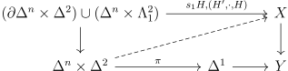
By taking \(d_1\) on the \(\Delta ^2\) component of the homotopy, we get an extension of \(H\) to a fibrewise homotopy from \(X_i\) to \(Z_i\). □
Lemma 3.13. A fibrewise homotopy equivalence of minimal fibrations is an isomorphism.
Proof. if \(f\) is a fibre homotopy equivalence and \(g\) a homotopy inverse, it suffices so show that \(g\circ f\) and \(f \circ g\) are isomorphisms. But they are homotopic to the identity, so it suffices to show that any fibrewise map \(a\) to a minimal fibration that is homotopic via a homotopy \(h\) to an isomorphism \(b\) is also an isomorphism.
Let’s first show that \(a\) is injective. Let \(\alpha \) be an \(n\)-simplex such that \(f(\alpha ) = f(\beta )\). By induction, we can assume that \(\partial \alpha = \partial \beta \). Thus \(h\) on the simplices restricts to a map on \(\Delta ^n\times \Lambda _2^2\), that can be extended to include \(\partial \Delta ^n \times \Delta ^2\) via \(s_0h\). Then extending this map to \(\Delta ^n\times \Delta ^2\) via Corollary 2.25 and Proposition 2.18 and taking the \(d_2\) component gives a fibrewise homotopy from \(\alpha \) to \(\beta \) relative to the boundary, which has to be trivial.
For surjectivity, let \(\alpha \) be an \(n\)-simplex. We can assume \(\partial \alpha \) is in the image of \(f\) by induction. Then by the homotopy extension property we can extend \(h\) on \(\partial \alpha \) to a fibrewise homotopy \(h_1\) from a simplex \(z\) to \(\alpha \). \(z=g(z')\) since \(g\) is surjective. So \(h_1\) and \(h|_{z'}\) are homotopies from \(z\) that agree on the boundary, so paste them together and extending to include \(\partial \Delta ^n \times \Delta ^2\) via \(s_1h\). Then again via Corollary 2.25 and Proposition 2.18 extend to \(\Delta ^n\times \Delta ^2\) and take \(d_0\) to get a fibrewise homotopy from \(\alpha \) to whatever \(g(z')\) is sent to by \(h\). □
Corollary 3.14. A minimal fibration is trivial on each simplex.
Proof. If \(f:X \to Y\) is a minimal fibration, and \(x=\Delta ^n\) is a simplex in \(X\), then there is a homotopy from the constant simplex on the zero vertex of x to the inclusion. The pullbacks of \(f\) along these two maps are then fibre homotopy equivalent, but the pullback along the constant map is a product. □
Theorem 3.15. The realization of a Kan fibration \(X \to Y\) is a Serre fibration.
Proof. By Proposition 3.12, the projection \(X \to Y\) factors through \(Z\), where the projection \(Z \to Y\) is locally trivial, hence a Serre fibration after realization. Thus it suffices to show \(X \to Z\) is also a Serre fibration. To do this, we will show it is a trivial fibration, and that the the realization of a trivial fibration is a Serre fibration.
The realization of a trivial fibration \(f:A \to B\) is a Serre fibration since we can find a lift in the diagram
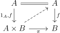
This shows that \(f\) is a retract of the projection \(A\times B\to B\) which is a Serre fibration after realizing, so it is also a Serre fibration.
To see that \(p:X \to Z\) is a trivial fibration, Note that it induces an isomorphism on homotopy groups since \(Z\) is a deformation retract of \(X\). If we are trying to lift the inclusion \(\partial \Delta ^n \to \Delta ^n=z\) over the projection \(X \to Z\), observe that we have a fibrewise homotopy \(H\) from the composite \(X \to Z \to X\) to the identity. We can extend this homotopy from the boundary of the simplex over \(Y\) to \(H'\), giving a simplex \(y\) in \(X\), and a homotopy \(H'\) from \(z\) to \(y\). \(p(y)\) certainly agrees with \(z\) on the boundary, so if they are fibrewise homotopic relative to \(Y\), they are equal by minimality.
\(pH'\) is a homotopy not relative to the boundary from \(z\) to \(p(y)\), and \(pH\) restricted to \(y\) is a homotopy agreeing with \(pH'\) on the boundary but from \(p(y)\) to itself. By pasting these homotopies together, we can ‘compose’ along the inclusion \((\partial \Delta ^n \times \Delta ^2) \cup (\Delta ^n\times \Lambda _2^2) \subset \Delta ^n\times \Delta ^1\), where on \(\partial \Delta ^n\times \Delta ^2\) we have used \(s_0pH\). Then the resulting homotopy from \(p(y)\) to \(z\) on the \(d_2\) edge will be relative to the boundary. □
Proposition 3.16. If \(X\) is a Kan complex, the homotopy groups \(\pi _n(X)\) and \(\pi _n(|X|)\) agree.
Proof. There is clearly a natural map \(\pi _n(X) \to \pi _n(|X|)\) that is compatible with the long exact sequence on homotopy groups. Observe that it is an isomorphism for \(\pi _0\) since the realization of a simplex is connected. Now consider the fibre sequence \(\Omega _x(X) \to P_x(X) \to X\). Since there is a contracting homotopy in \(P_x(X)\), \(|P_x(X)|\) is contractible. Then by induction using the long exact sequence to dimension shift, \(\pi _i\) is an isomorphism for all \(i\). □
It is also true by definition essentially that \(\pi _n(X) = \pi _n(SX)\).
Definition 3.17. A map in \(\CGHaus \) is a Serre fibration if it has the right lifting property with respect to all inclusions \(\Lambda ^n_i \subset \Delta ^n\). It is a Serre cofibration if it has the left lifting property with respect to all Serre fibrations.
A map is a weak equivalence in either \(\CGHaus \) or Kan complexes if it induces an isomorphims on \(\pi _n\).
Lemma 3.18. A Serre fibration is a weak equivalence iff it has the right lifting property with respect to \(|\partial \Delta ^n|\subset |\Delta ^n\).
Proof. This has the same proof as Proposition 3.7. □
Lemma 3.19. The realization of a cofibration is Serre cofibrant, and the singular set of a Serre fibration is a Kan fibration.
Proposition 3.20. If \(X\) is a Kan complex, \(X \to S|X|\) is a weak equivalence to a cofibrant fibrant object and if \(X \in \CGHaus \), \(|SX| \to X\) is a weak equivalence from a cofibrant fibrant object.
Proof. This essentially follows from Proposition 3.16. □
Model categories are a \(1\)-categorical way to present a homotopy theory (\(\infty \)-category) in a computable way.
Definition 4.1. A weak factorization system in a category \(C\) is pair of classes of morphisms \((L,R)\) such that every morphism factors into \(g\circ f\) where \(g \in R,f \in L\), and \(R = L^{\oslash }\), \(L = \phantom{}^\oslash R\).
It follows that \(L\) is saturated, and \(R\) is cosaturated. \((\rightarrow ,\cong ),(\cong ,\rightarrow )\) are always trivial weak factorization systems. There is a weakening of the axioms for weak factorization systems that is equivalent.
Lemma 4.2. Two classes \(L,R\) form a weak factorization system iff they satisfy
Proof. Clearly these are implied by the definition of a weak factorization system. Conversely, it will suffice by duality to show that if a morphism \(f\) has the left lifting property with respect to all morphisms in \(R\), it is in \(L\). But we can factor \(f = g\circ h\) with \(h \in L, g \in R\). But finding a lift in the diagram below shows \(f\) is a retract of \(h\).
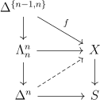
Definition 4.3. A homotopical category is a category with a subcategory \(W\) (weak equivalences) containing all objects and satisfying \(2\) out of \(6\).
It follows that \(W\) contains all isomorphisms. There are two trivial homotopical structures, the minimal one, which is just isomorphisms, and the maximal one, which contains all morphisms. I think the minimal one is only useful for receiving maps (derived functors), and the maximal one is useful because its homotopy category is essentially the homotopy type of the nerve. A homotopical functor between homotopical categories preserves weak equivalences. If \(D\) has the minimal homotopical structure, homotopical functors \(C \to D\) are the same as functors \(h(C)\to D\).
The homotopy (\(\infty \)-)category of a homotopical category is its localization under weak equivalences. In otherwords, it is the universal \(\infty \)-category receiving a map from it that such that the weak equivalences are sent to equivalences. The homotopy \(1\)-category is the \(1\)-coskeleton of this, given by \(1\)-categorical localization.
Definition 4.4. A homotopical category is saturated if \(W\) is exactly the class of morphisms that are inverted in its homotopy \(1\)-category.
Definition 4.5. A (closed) model category \(C\) is a category equipped with three classes of arrows: cofibrations (\(\rightarrowtail \)), fibrations (\(\twoheadrightarrow \)) and weak equivalences (\(\xrightarrow{\sim }\)) satisfying the following axioms:
Note that the definition is self-dual. Observe that for a model category, any pair of classes cofibrations, fibrations, weak equivalences determines the third.
A main step in producing model categories is in producing factorization systems. The following, Quillen’s small object argument, produces functorial factorizations under general conditions from a starting class of morphisms.
Definition 4.6. Let \(\kappa \) be a regular cardinal. \(x \in C\) is \(\kappa \)-small if the functor it corepresents preserves \(\alpha \)-composites for any \(\alpha \geq \kappa \).
Proposition 4.7 (Small object argument). Let \(J\) be a set of maps in \(C\), and suppose \(C\) is cocomplete. If the codomains of elements of \(J\) are \(\kappa \)-small, then there is a functorial factorization making \((\phantom{}^\oslash (J^{\oslash }),J^{\oslash })\) into the smallest weak factorization system containing \(J\). Moreover, \(\phantom{}^\oslash (J^{\oslash })\) is the weak saturation of \(J\), or alternatively retracts of morphisms coming from this construction.
Proof. Let \(f:X \to Y\) be our map and let \(A_f\) be the set of all commutative squares \(S\) of the form 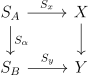 where \(S_\alpha \in J\). Now consider the pushout diagram:
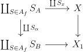
There is a canonical projection \(f_1:X_1\to Y\) given by the \(S_y\) and \(f\), and the construction of \(X_1\) is functorial. Moreover, \(X \to X_1\) is in \(\phantom{}^\oslash (J^{\oslash })\), and for any diagram in \(A\), there is a canonical lift on \(X_1\). Now we can inductively define \(f_\alpha , X_\alpha \) for any limit ordinal. Namely, \(X_{\alpha +1},f_{\alpha +1} = (X_{\alpha })_1,(f_{\alpha })_1\). For a limit ordinal, define it to be the limit. of the \(X_i,f_i\) before it. Then \(X \to X_{\kappa }\) is in \(\phantom{}^\oslash (J^{\oslash })\) as it is a transfinite composite of such things, and \(f_{\kappa }:X_{\kappa } \to Y\) is in \(J^{\oslash }\) since the codomains are \(\kappa \)-small.
This verifies factorization in a functorial way. The lifting property comes from Lemma 2.8, so this is a weak factorization system, and it is clearly the minimal one containing \(J\) on the left. We have only used the operations in the weak saturation of \(J\) to construct the factorization, so by Lemma \(\ref{weakfactorizationrecognition}\), \(\phantom{}^\oslash (J^{\oslash })\) is the weak saturation of \(J\). □
Definition 4.8. A model category is cofibrantly generated if its weak factorization systems are generated by a set of morphisms.
The factorization systems of a category \(C\) form a poset, where \((L,R) \leq (L',R')\) iff \(L \subset L'\).
Example 4.8.1. We can easily classify nontrivial weak factorization systems \((L,R)\) in \(\Set \). Let \(\hookrightarrow ',\twoheadrightarrow ,\phi \) denote the classes of injections from a nonempty set, surjections, and maps from the empty set respectively, where we additionally include isomorphisms.
The first observation is that for any nontrivial map from the empty set \(f\), \(\phantom{}^\oslash f =f^{\oslash } = \hookrightarrow '\cup \twoheadrightarrow \). So the model structures on \(\Set \) are just model structures on nonempty sets (temporarily called \(C\)) with \(\phi \) attached to either \(L\) or \(R\). So from now on we work in \(C\).
Suppose \(f \in L\) that isn’t injective. Then the map \(\cdot \cdot \to \cdot \) is a pushout of \(f\). The maps with the right lifting property with respect to this are the injections. The maps with the left lifting property with respect to injections are the surjections, giving \((\twoheadrightarrow ,\hookrightarrow ')\). .
If in addition there is a nonempty nontrivial injection in \(L\), then \(R\) has to be just isomorphism.
If \(L\) has instead a map which isn’t surjective, \(R\) has all surjections, and we see \(L\) has to be injection, giving \((\hookrightarrow ',\twoheadrightarrow )\). Any additional maps in \(L\) would again make it everything.
Example 4.8.2. Consider a poset \(P\) as a category. \(f \oslash g\) iff \(\cod f \leq \dom g\) whenever \(f \leq g\). We can obtain a large family of weak factorization systems \((\rightarrowtail ,\twoheadrightarrow )\) by choosing a family of arrows \(A\) such that \(a \leq b, a \in A \implies b \in A\), and declaring all arrows of \(A\) along with isomorphisms to be \(\rightarrowtail \), and all other nonidentity arrows along with isomorphisms to be \(\twoheadrightarrow \).
For example, on \(\Delta ^1\times \Delta ^1\), the only weak factorization system (up to automorphisms) not coming from this construction is
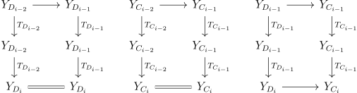
\(\Delta ^1\times \Delta ^1\)can be used to construct an example of factorization systems \( (\rightarrowtail ,\overset{\sim }{\twoheadrightarrow }) \leq (\overset{\sim }{\rightarrowtail }, \twoheadrightarrow )\) that don’t come from a model structure. In particular, consider the diagram below:

Another example comes from the poset \(\Delta ^2\), where we use the following pair of weak factorization systems:
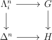
These don’t come from model structures because the weak equivalences wouldn’t satisfy \(2\) out of \(3\).
The last part of Example \(\ref{posetfactorizationsystems}\) shows two obstructions to two factorization systems \( (\rightarrowtail ,\overset{\sim }{\twoheadrightarrow }) \leq (\overset{\sim }{\rightarrowtail }, \twoheadrightarrow )\) giving rise to a model structure. These are the only obstructions, as shown below.
Proposition 4.9. Let \(C\) have finite limits and colimits. \( (\rightarrowtail ,\overset{\sim }{\twoheadrightarrow }) \leq (\overset{\sim }{\rightarrowtail }, \twoheadrightarrow )\) are the factorization systems of a model structure iff \(\overset{\sim }{\twoheadrightarrow }\cup \overset{\sim }{\rightarrowtail }\) satisfies \(3\) out of \(4\) with respect to \(\twoheadrightarrow \cup \rightarrowtail \), and \(\overset{\sim }{\twoheadrightarrow }, \overset{\sim }{\rightarrowtail }\) satisfy \(2\) out of \(3\) with respect to \(\overset{\sim }{\twoheadrightarrow }, \overset{\sim }{\rightarrowtail }\) respectively.
Proof. Those conditions are necessary for weak equivalences to satisfy \(2\) out of \(3\). In the proof of sufficiency, we declare an arrow \(f\) to be a weak equivalence if it factors as \(h \circ f\), where \(h\) is a trivial fibration and \(f\) a triival cofibration. Because of \(3\) out of \(4\) and the fact that we have a factorization system, this is equivalent to \(f\) factoring as a composite of maps that are either trivial fibrations or trivial cofibrations.
First we observe that the trivial fibrations are the fibrations that are weak equivalences and dually for cofibrations. Indeed, a trivial fibration by assumption is a fibration, and the trivial factorization shows it is a weak equivalence. If \(f\) is a trivial fibration and a week equivalence, then factoring it as a trivial fibration and cofibration and lifting as in the diagram below shows that it is a retract of a trivial fibration.

It remains then to show weak equivalences satisfy \(2\) out of \(3\).
First we can observe that any composite of weak equivalences is a weak equivalence because it can be factored a composite of trivial fibrations and cofibrations. Now suppose \(h = g\circ f\) where \(f,h\) are weak equivalences. We can factor \(g\) into a fibration \(g'\) and trivial cofibration, which we can absorb into \(f\). Then factor \(f,h\) as \(f' \circ f'',h'\circ h''\), trivial cofibrations followed by a trivial fibration. Because of \(2\) out of \(3\), it suffices to show that \(g \circ f'\) is a trivial fibration. But this follows from the \(3\) out of \(4\) property on the square \((g \circ f') \circ f'' = h'\circ h''\). The other part of \(2\) out or \(3\) is dual. □
Note that such a model structure is necessarily unique. In practice, we are often supplied a notion of weak equivalence satisfying two out of three. This makes it a bit easier to check something is a model category. Here are two ways in which that can be realized.
Lemma 4.10. Let \(C\) have finite limits and colimits. Suppose we have two factorization systems \( (\rightarrowtail ,\overset{\sim }{\twoheadrightarrow }) \leq (\overset{\sim }{\rightarrowtail }, \twoheadrightarrow )\) and a notion \(\xrightarrow{\sim }\) of weak equivalence satisfying \(2\) out of \(3\) and such that \(\overset{\sim }{\twoheadrightarrow } = \xrightarrow{\sim }\cap \twoheadrightarrow \) and \( \overset{\sim }{\rightarrowtail } \subset \xrightarrow{\sim }\). Then this data gives a model structure.
Proof. It suffices to check that \(\xrightarrow{\sim }\cap \rightarrowtail \subset \overset{\sim }{\rightarrowtail }\). But we can factor a weak equivalence as a triival cofibration and trivial fibration, and if it is also a cofibration lift the square of this factorization to see that it is a a retract of a trivial cofibration. □
Proposition 4.11. Let \(\adjunction{F}{C}{D}{U}\) be an adjunction, suppose that \(D\) is bicomplete, \(C\) has a model structure cofibrantly generated by \(\kappa \)-small objects that are sent to \(\kappa '\)-small objects in \(D\). We can try to define a model structure by having a map in \(D\) be a fibration or weak equivalence if it is after applying \(U\). Suppose that if \(f \in D\) has the left lifting property with respect to \(g\) such that \(Uf\) is a fibration, then \(Uf\) is a weak equivalence. Then we get a cofibrantly generated model structure generated by \(Fi\) where \(i\) are the generators for \(C\).
Proof. The condition on fibrations and weak equivalences clearly determines the model structure if it exists. We can construct our factorizations via Proposition 4.7 since the generators of the factorization systems for \(D\) are \(F\) applied to the ones for \(C\) by the adjunction, and these are sent to \(\kappa \)-small objects. \(2\) out of \(3\) is clear so by Lemma 4.10 and the last assumption, we are done. □
Example 4.11.1. The Serre model structure on the category \(\CGHaus \) has the cofibrations generated by \(|\Lambda ^n_i|\subset |\Delta ^n|\) and the trivial cofibrations are generated by \(|\partial _n \Delta ^n| \subset |\Delta ^n|\), and a weak equivalence to be a weak homotopy equivalence. \((CM1), (CM2)\) are clearly satisfied. By Lemma 3.18, a fibration is a trivial fibration iff it is a weak equivalence. Moreover, trivial cofibration of the construction in Proposition 4.7 are weak equivalences since they are the inclusion of a deformation retract. Thus any trivial cofibration is since it is a retract of the construction. By Lemma 4.10 we are done.
Example 4.11.2. The Quillen model structure on \(\SSet \) has cofibrations generated by \(\Lambda ^n_i \subset \Delta ^n\), and trivial cofibrations generated by \(\partial \Delta ^n \subset \Delta ^n\). From the Proposition 4.7, these give factorization systems where the cofibrations are anodyne extensions, and the trivial cofibrations are inclusions by Lemma 2.14. A map \(X \to Y\) is a weak equivalence if it induces an isomorphism on \(\pi _n\) after passing to fibrant replacements. This agrees with the usual notion of weak equivalence for fibrant things, and \((CM1), (CM2)\) are satisfied. Now given a Kan fibration, by Proposition 3.7 it is an isomorphism on homotopy groups iff it is trivial. By Proposition 3.16, \(X \to Y\) is a weak equivalence iff \(|X| \to |Y|\) is in the Serre model structure. Moreover, the realization of a cofibration is a cofibration, so since \(|\Lambda ^n_i| \subset |\Delta ^n|\) is a weak equivalence, and the set of cofibrations such that \(|X|\to |Y|\) is an equivalence is weakly saturated, all trivial cofibrations are weak equivalences. Thus by Lemma 4.10 we are done.
The model structure gives a handle on the associated homotopy category. For example it is possible to construct a mapping space from cofibrant objects to fibrant objects that agrees with the mapping space in the \(\infty \)-category. We will start by understanding the homotopy \(1\)-category, denoted \(h(C)\). If \(A\) is an object of \(C\), define a cylinder object of \(A\), denoted \(\Delta ^1A\) (resembling \(\Delta ^1\times A\)) to be a factorization
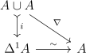
Where \(\nabla \) is the fold map. The dual notion is a path object of \(B\), denoted \(B\Delta ^1\) (resembling \(B^{\Delta ^1}\)). Cylinder objects always exist, and furthermore we can always make the weak equivalence also a fibration.
Definition 4.12. Given a cylinder object, a left homotopy from \(f\) to \(g\) is a commutative diagram:
\(f,g\) are left homotopic if there is a left homotopy with respect to some cylinder. If \(f, g\) are left homotopic via some cylinder, \(hf, hg\) are too. There is also a dual notion of right homotopy.
Lemma 4.13. Let \(A\) be cofibrant. Then the components of \(i\) are trivial cofibrations, and left homotopy is an equivalence relation.
Proof. By pushing out the initial maps to the two factors \(A\), we see that each of the inclusions into \(A\cup A\) is a cofibration, so the components of \(i\) are as well. Moreover, since the map \(\Delta ^1A \to A\) is a weak equivalence, by the \(2\) out of \(3\) property, so are the components of the inclusion.
Reflexivity of left homotopy comes from the canonical map \(\Delta ^1A \to A\). Symmetry comes from swapping the factors. Transitivity follows by observing that we can pushout two left homotopies and two cylinders along a common map to get another homotopy and cylinder. We need \(A\) to be cofibrant so that the pushout is also a cylinder. □
Proposition 4.14. TFAE when \(A\) is cofibrant, \(B\) is fibrant, \(f,g\) are maps \(A \to B\):
Proof. It will suffice to show by duality that if we have a right homotopy, and a cylinder object \(\Delta ^1A\) for \(A\), then \(f,g\) are left homotopic with respect to \(\Delta ^1A\). Let \(p_0,p_1\) be the components of the projection \(B\Delta ^1 \to B\times B\), let \(\sigma : B\to B\Delta ^1\) be the equivalence coming from the path structure, and let \(h\) be the right homotopy. Then the map \(p_1\gamma \) in the diagram below is a left homotopy.
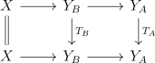
We will call a map \(\gamma :\Delta ^1A \to B\Delta ^1\) such that the diagram in Proposition 4.14 commutes a correspondence between the left and right homotopies.
Lemma 4.15 (Whitehead). If \(f:X \to Y\) is a weak equivalence between cofibrant fibrant objects, it is a homotopy equivalence.
Proof. Since homotopy equivalences are closed under composition and we can factor a weak equivalence into a trivial fibration and cofibration, it suffices by duality to show it when \(f\) is a trivial cofibration. If \(\cdot \) denotes the terminal object, let \(g\) denote a lift of the diagram
By construction it is a left inverse so it suffices to show \(f \circ g\) is homotopic to the identity. This can be achieved by finding a lift in the diagram below.
Whitehead’s theorem has a converse.
Theorem 4.16. The homotopy (1-)category of a model category \(C\) is given by homotopy class of maps between cofibrant fibrant objects. Moreover, isomorphism in the homotopy category is the same as weak equivalence, so model categories are saturated homotopical categories.
Proof. It is ok to just think about the full essentially surjective subcategory of the homotopy category consisting of cofibrant fibrant objects. Now suppose we have a functor \(F:C \to D\) inverting weak equivalences. Since the two inclusions into a cylinder are equal in the homotopy \(1\)-category, \(F\) factors through the category obtained by identifying homotopy classes of maps. By Lemma 4.15, weak equivalences are already isomorphism in this category, so the factorization is unique.
Now suppose that a map \(f:X \to Y\) is an isomorphism in the homotopy category. After passing to cofibrant fibrant replacements using the \(2\) out of \(3\) property, we can assume that our objects are cofibrant fibrant, so that \(f\) has a homotopy inverse \(g\). Moreover, by factoring \(f\) into a trivial cofibration and fibration and using Lemma 4.15, we can assume \(f\) is a fibration. The strategy is to show that \(f\) has the right lifting property with respect to cofibrations. Let \(\Delta ^1X,\tilde{Y}\) be path objects for \(X,Y\), \(k\) a right homotopy from \(gf\) to the identity, and form the diagram below given a map from a cofibration \(i\) to \(f\) given by maps \(\alpha ,\beta \):
If we could fill in the map \(?\) in a way that \((p_0,?)\) is a fibration and the diagram commuted, it would have to be a trivial fibration by the \(2\) out of \(3\) property for the composition with \(X\times _{\pi _2} Y \to X\), so we could make the indicated lift and be done.
To make \(?\) we will choose a particularly nice right homotopy from \(gf\) to the identity by slightly modifying the dual construction of Proposition 4.14.
Let \(h:\Delta ^1X \to X\) be a left homotopy from \(gf\) to the identity, and \(s\) the map \(\Delta ^1X \to X\). Choose a path object \(Y\Delta ^1\) for \(Y\). We can make a path object \(X\Delta ^1\) for \(X\) with a compatible fibration \(\hat{f}=?\) to \(Y\Delta ^1\) by factoring the map \((\Delta ,\sigma _Y f): X \to (X\times X)\times _{Y\times Y} Y\Delta ^1\) as a trivial cofibration and fibration. Then create a lift \(Q\) in the diagram below.
\(k=i_1Q\)is a right homotopy from \(gf\) to the identity with the extra property that \(\hat{f}k = \sigma _Yf\). This shows that the strategy works. □
We now briefly examine the higher categorical structure on a model category. Let \(X\) be a semi-simplicial set. We will inductively define a semi-simplicial set of cylinders for \(A\), denoted \(\Cyl (A)\), where a map of a \(X\)-cylinder object for \(A\) is denoted \(XA\). A \(\Delta ^0\)-cylinder is the data below.
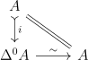
Suppose we have defined the \(\Delta ^{n-1}\)-cylinders. Then a \(\Delta ^n\)-cylinder will be a choice of \(\partial{\Delta ^n}\)-cylinder and a diagram as below.
Its boundary maps will be the ones coming from \(\partial \Delta ^nA\). Using \(\Cyl (A)\), we can define a semi-simplicial mapping space \(\Maps _{\Cyl }(A,B)\) where the \(n\)-simplices are a choice of \(\Delta ^nA\) and a map \(\Delta ^nA \to B\). There is a dual notion of \(\Path (B)\) and \(\Maps _{\Path }(A,B)\). We can also force these to be simplicial sets by Kan extension.
Question 4.16.1. Is \(\Maps _{\Cyl }(A,B)\) a semi-simplicial Kan complex? What about its simplicialization? Can one canonically identify \(\Maps _{\Cyl }(A,B)\) with \(\LMaps (A,B)\) in the homotopy \(\infty \)-category (even with no conditions on \(A,B\))?
In any case, \(\Cyl (A)\) has a very nice property that cells can be reordered. For example, there is an involution on the \(1\)-simplices given by swapping. This suggests it’s even better than a Kan complex. Maybe a semi-simplicial structure is not the right thing but rather some other test category such as a globe or cube category is better. The following lemma suggests as much.
Lemma 4.17. Given a left homotopy \(h:\Delta ^1X \to Y\) from \(\alpha \) to \(\beta \) with structure map \(s:\Delta ^1X\to X\), the composite homotopy \(h^{-1}\circ h:\overline{\Delta ^1}X\to X\) is homotopic to the constant homotopy on \(\alpha \) via a map \(H\), i.e there is a diagram as below:

Proof. Choose \(Y\Delta ^1\) with structure map \(\sigma \), and a correspondence \(\gamma \) between \(h\) and a right homotopy \(k\) on \(Y\Delta ^1\). \(\gamma \) glues on \(\overline{\Delta ^1}X\cup _{X\cup X}\overline{\Delta ^1}X\) to give a map \(\overline{\gamma }\), so we can lift the diagram

and the map \(p_1K=H\) works. □
Lemma 4.18. Suppose \(X,Y\) are cofibrant fibrant, and \(f:X \to Y\) is a trivial fibration. Then \(f\) admits a section \(g\), and for any section there is a homotopy \(H:\Delta ^1X \to X\) from \(gf\) to the identity such that \(fH\) is the constant homotopy of \(f\) (i.e a fibrewise homotopy).
Proof. \(f\) admits a section \(g\) by lifting the identity along \(f\), and since this is an inverse in the homotopy category, there is a left homotopy \(h: \Delta ^1X \to X\) from the identity to \(gf\). Let \(h^{-1}\) denote tha homotopy in the other direction obtained from swapping factors. \(gfh^{-1}\) is a homotopy from \(gf\) to itself, and let \(gfh^{-1}\circ h:\overline{\Delta ^1}X \to X\) be the composite of the homotopies \(gfh^{-1}\) and \(h\).
By Lemma 4.17 \(f(gfh^{-1}\circ h) = fh^{-1}\circ fh\) is homotopic to the identity via some homotopy \(H:X' \to Y\), where \(i_L,i_R\) are the inclusions \(\overline{\Delta ^1}X \to X'\), we can create a lift \(K\) as below so that \(Ki_R\) will be the desired fibrewise homotopy.
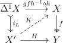
Proposition 4.19. Let \(\adjunction{F}{C}{D}{U}\) be an adjunction, suppose that \(D\) is bicomplete, \(C\) has a model structure cofibrantly generated by \(\kappa \)-small objects that are sent to \(\kappa '\)-small objects in \(D\). We can try to define a model structure by having a map in \(D\) be a fibration or weak equivalence if it is after applying \(U\). If \(D\) has natural path objects \(P\) and a natural fibrant replacement \(Q\), we get a cofibrantly generated model structure generated by \(Fi\) where \(i\) are the generators for \(C\).
Proof. By Proposition 4.11, it suffices to show if \(f \in D\) has the left lifting property with respect to \(g\) such that \(Uf\) is a fibration, then \(Uf\) is a weak equivalence. Now produce a lift \(u\) of the diagram
Then construct a lift in the diagram
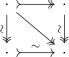
, so that in the diagram
The upper triangle commutes and the lower triangle does up to right homotopy. Applying \(U\) to this square, which preserves right homotopy, we see that \(UA \to UB\) is an isomorphism in the homotopy \(1\)-category of \(C\). □
Remark 4.19.1. There is an alternate hypothesis that will make the proof of Proposition 4.19 go through, but seems not as good. Namely, we can assume \(U\) preserves \(\kappa \)-sequential colimits instead of the assumption about the generators being sent to small objects. Then we can use a variant of Proposition 4.7 to produce the factorization system. Namely, after countably many steps in the small object argument, since \(U\) preserves \(\kappa \)-sequential colimits, we will be able to lift the generating cofibrations in \(C\).
A left Quillen functor between model categories is one that preserves (finite) colimits, cofibrations and trivial cofibrations. Dually there is a notion of right Quillen functor.
Quillen functors are useful because one can compute their derived functors.
Definition 5.1. If \(F:C \to D\) is a functor of homotopical categories, the total left derived functor, denoted \(\LL F\) is the right Kan extension of the diagram:
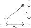
To help compute derived functors, we can use a deformation.
Definition 5.2. A left deformation on a homotopical category \(C\) is an endofunctor \(Q\) with a natural weak equivalence \(q\) from \(Q\) to the identity.
Let \(C_Q\) denote the full subcategory of objects in the image of \(Q\), also called a left deformation retract. A left deformation induces an equivalence between \(h(C)\) and \(h(C_Q)\). If we have a functorial map from a cofibrant fibrant factorization in a model category, that is a left defomation.
Definition 5.3. a left deformation on a functor \(F:C \to D\) is a left deformation \(Q\) on \(C\) such that \(F\) is homotopical on \(C_Q\).
\(F\) is left deformable if it admits a left deformation. Any left deformable functor has a maximal subcategory on which it is homotopical (not proven here but uses 2 out of 6).
Proposition 5.4. If \(F:C\to D\) between homotopical categories has a left deformation \(Q,q\), then \(FQ\) induces a left derived functor of \(F\).
Proof. Let \(h_C\) denote the localization functor of \(C\). Since \(F\) is homotopical on \(C_Q\), \(h_DFQ\) does descend to a functor from \(h(C)\). \(h_DFq\) gives the natural transformation we want. Instead of proving the universal property in \(h(D)^C\), it suffices to prove it in the equivalent full subcategory of \(h(D)^C\) consisting of homotopical functors. Now suppose that \(G\in h(D)^C\) is homotopical and we have a natural transfromation \(\eta :G\to h_DF\). \(Gq:GQ\to G\) is a natural transformation that is a natural isomorphism since \(G\) is homotopical. Thus by naturality of \(\eta \), \(\eta \) factors as \(h_DF q \circ \eta Q \circ (Gq)^{-1}\). Uniqueness follows from the fact that \(h_DFq\) is a natural isomorphism since \(q\) is a weak equivalence. □
Morally here is how one can think about a deformation. When you invert weak equivalences, you really get an \(\infty \)-category, and we can expect left Kan extensions to be the \(1\)-categorical shadow of computing (homotopy) colimits in the \(\infty \)-category, as is the formula for Kan extensions when enough colimits exist. The deformation allows you to \(1\)-categorically change your object to one that is homotopically good, so that the \(\infty \)-categorical colimit agrees with the usual one.
Remark 5.4.1. Maybe it’s worth mentioning that \(FQ\) is really an absolute Kan extension, i.e it is preserved by post composition with all functors (including the representable ones, making it a pointwise Kan extension).
There is really a pseudo \(2\)-functor taking a homotopical category \(C\) to \(h(C)\), a left deformable functor to its total left derived functor, and a natural transformation of such functors to the derived natural transformation.
Lemma 5.5 (Ken Brown’s Lemma). Let \(F:C\to D\) be a functor between model categories that sends trivial cofibrations between cofibrant objects to weak equivalences. Then \(F\) is homotopical on the category of cofibrant objects.
Proof. Let \(f:X \to Y\) be a weak equivalence of cofibrant objects. Factor \(X \coprod Y \xrightarrow{f,1} Y\) as a cofibration and trivial cofibration, and consider the diagram below.
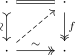
By \(2\) out of \(3\), \(i,j\) are weak equivalences, so they get sent to weak equivalences. But then since the map \(Z \to Y\) is a retraction of \(i\), it is also sent to a weak equivalence by \(2\) out of \(3\). Then \(f\) is too by \(2\) out of \(3\). □
Corollary 5.6. If \(C\) has a functorial cofibrant replacement, then a left Quillen functor is left deformable. In any case, the total left derived functor exists, and can be computed by taking a cofibrant replacement.
Proof. The first fact follows from 5.5 and second just requires the additional observation that the inclusion of the full subcategory of cofibrant objects induces an equivalence on the homotopy category. □
An adjunction is called a Quillen adjunction if the left adjoint is left Quillen and similarly for the right adjoint.
Lemma 5.7. TFAE for an adjunction \(F\dashv G\)
Proof. The preserving limits and colimits is satisfied because of the adjunction. The equivalences then follow because of Lemma 2.10. □
A Quillen adjunction induces an adjunction on the homotopy \(1\)-categories. The same can be said of an adjoint pair of deformable functors between homotopical categories.
A Quillen adjunction is a Quillen equivalence if its derived functors are an equivalence.
Lemma 5.8. A Quillen adjunction \(\adjunction{F}{C}{D}{G}\) is a Quillen equivalence iff when \(c \in C\) is cofibrant and \(d \in D\) is fibrant, then \(Fc \to d\) is a weak equivalence iff the adjoint map \(c \to Gd\) is.
Proof. Suppose \(F\dashv G\) is a Quillen equivalence. Then for \(c\) cofibrant and \(d\) fibrant, \(F,G\) agree with the derived functors, so combined with the fact that weak equivalences are the isomorphism in the homotopy category, the condition follows. Conversely if the condition holds, then the unit map \(c \to GFc\) is an isomorphism in \(h(C)\) since \(G\) is given by taking a fibrant replacement and applying \(G\), so by the condition it is equivalent to \(Fc\) being isomorphic or weakly equivalent to the fibrant replacement. □
For example \(S\) and \(|\cdot |\) give a Quillen equivalence between the Serrre and Quillen model structures.
Simplicial model categories are ones that have a compatible simplicial enrichment and tensoring/cotensoring. Many natural examples of model categories are simplicial model categories.
Definition 5.9. A left Quillen bifunctor \(\otimes : C \times D \to E\) is a map of model categories preserving colimits in both variables, and such that the Construction 2.21.1 \(\hat{\otimes }\) sends pairs of cofibrations to cofibrations that are trivial iff either arrow is.
Lemma 5.10. Left Quillen bifunctors preserve cofibrant objects and are homotopical on the subcategories of cofibrant objects.
Proof. These claims follow from the condition on \(\hat{\otimes }\) and Lemma 5.5. □
Lemma 5.11. If \(\otimes ,\{,\},\hom \) form a two variable adjunction between model categories, then one is a Quillen bifunctor iff the rest are.
Proof. This follows from Lemma 2.22. □
Definition 5.12. A simplicial model category is a \(\SSet \) enriched model category that is tensored and cotensored such that \(\otimes \) is a left Quillen bifunctor.
By Lemma 2.25 and Lemma 2.26, the Quillen model structure on \(\SSet \) is a simplicial model category.
With a simplicial model category, we have nice cylinders. For example, \(\Delta ^1\) is a cylinder object for \(\Delta ^0\) in \(\SSet \), and tensoring with \(A\) gives a cylinder object for \(A\) when \(A\) is cofibrant. Thus if \(A\) is cofibrant and \(B\) fibrant, then homotopy of maps \(A \to B\) agrees with equivalence in \(\ul \Hom (A,B)\).
Lemma 5.13. \((W2)\) for the factorization systems is implied by the rest of the axioms for a simplicial model category. Moreover, if the object in the upper left corner is cofibrant, the lift is unique up to relative homotopy.
Proof. A lift in a diagram of the form
is the same as a lift of a \(0\)-simplex in the map \(\Hom (B,X) \to \Hom (A,X) \times _{\Hom (B,Y)}\Hom (X,Y)\). But this is a trivial fibration if either of the vertical maps is trivial by the fact that the two-variable adjunction with \(\otimes \) is Quillen, so there is a unique lift up homotopy. □
We can reduce the amount of work needed to check something is a simiplicial model category by observing that we can check the condition of \(\otimes ,\{,\}\) or \(\hom \) being a Quillen bifunctor on generating cofibrations or generating fibrations.
Lemma 5.14. If \(A,B\) are cofibrant, \(A \to B\) is an equivalence in a simplicial model category iff \(\ul \Hom (B,C) \to \ul \Hom (A,C)\) is a weak equivalence for every fibrant object \(C\).
Many categories of simplicial objects (eg: models of Lawvere theories) have natural simplicial model structures. These often come from inducing model structures through an adjunction
Proposition 5.15. Let \(\adjunction{F}{C}{D}{U}\) be an enriched adjunction of categories tensored and cotensored over \(\SSet \), suppose that \(D\) is bicomplete, and \(C\) has a simplicial model structure cofibrantly generated by \(\kappa \)-small objects that are sent to \(\kappa '\)-small objects in \(D\). We can try to define a model structure by having a map in \(D\) be a fibration or weak equivalence if it is after applying \(U\). Suppose that if \(f \in D\) has the left lifting property with respect to \(g\) such that \(Uf\) is a fibration, then \(Uf\) is a weak equivalence.
Then \(D\) has a cofibrantly generated simplicial model structure where the fibrations and weak equivalences are determined by applying \(U\), the cofibrations are generated by \(U\) applied to generators for \(D\).
Proof. By Proposition 4.11 a model structure, and we only need to show that it is simplicial.
To do this, we can identify the map \[U\hom _{D}(L,X) \to U(\hom _{\simp C}(K,X)\times _{\hom _{D(K,Y)}} \hom _{D} (L,Y) )\] with \[\hom _{C}(L,UX) \to \hom _{C}(K,UX)\times _{\hom _{C(K,UY)}} \hom _{C} (L,UY)\] since the adjunction is enriched and \(U\) preserves pullbacks. If \(K \to L\) is a cofibration and \(X \to Y\) is a fibration, one of which is trivial then this map is a fibration, since \(C\) is a simplicial model category. □
Lemma 5.16. If \(D\) has a functorial fibrant replacement \(Q\), then the last condition of Proposition 5.15 is satisfied.
Proof. We have a functorial path object given by \(\hom (\Delta ^1,-)\), and \(Q\) is a functorial fibrant replacement, so by Proposition 4.19 we are done. □
The following corollary is probably bad because the last assumption is unnecessary. Or maybe not because the other version requires the objects to be “small”.
Corollary 5.17. Let \(\adjunction{F}{\Set }{C}{U}\) be an adjunction of categories, suppose that \(C\) is bicomplete, \(F\) sends \(1\) to a \(\kappa \)-small object in \(C\). We can try to define a model structure on \(\simp C\) by having a map in \(\simp C\) be a fibration or weak equivalence if it is after applying \(U\). Suppose that if \(f \in \simp C\) has the left lifting property with respect to \(g\) such that \(Uf\) is a fibration, then \(Uf\) is a weak equivalence.
Then \(\simp C\) has a cofibrantly generated simplicial model structure where the fibrations and weak equivalences are determined by applying \(U\), the cofibrations are generated by \(U\) applied to generators for \(D\).
Proof. \(\simp{C}\) is tensored and cotensored by Lemma 2.24. The adjunction \(\adjunction{F}{\simp C}{\SSet }{U}\) enriches over \(\SSet \) by Lemma 2.23 since \(F(X \times K) \cong F(X)\otimes K\). \(F\) sends the generators of cofibrations/trivial cofibrations to \(\kappa \)-small objects after possibly enlarging \(\kappa \) since \(\Delta ^{op}\) is a small category, so by Proposition 5.15 we are done. □
Example 5.17.1. Any category for which the forgetful functor factors through groups satisfies Lemma 5.16 with \(Q\) the identity by Proposition 3.1. This includes simplicial groups, rings, Lie algebras, modules.
I think you can replace small in the theorem below by \(\kappa \)-small if you use a large ordinal power of \(\Ex \) rather than \(\Ex ^\infty \).
Theorem 5.18. Let \(C\) be complete and cocomplete, and let \(Z_i\) be a set of small objects of \(C\), and regard them as constant simplicial objects. Then there is a cofibrantly generated simplicial model structure on \(\simp C\) such that a map \(A \to B\) is a weak equivalence or fibration iff the maps \(\ul \Hom _{\simp C}(Z_i,A) \to \ul \Hom _{\simp C}(Z_i,B)\) is one.
Proof. Use \(\Ex \) to produce a natural fibrant replacement... □
Example 5.18.1. Simplicial objects of models of any Lawvere theory will have the forgetful functor corepresented by a small object, making Theorem 5.18 apply.
Example 5.18.2. Let \(\FF \) be a field. A coalgebra over \(\FF \) is locally finite dimensional, so the finite dimensional coalgebras are a set of small generators. Thus we can apply Theorem 5.18 on the set of finite dimensional coalgebras.lm